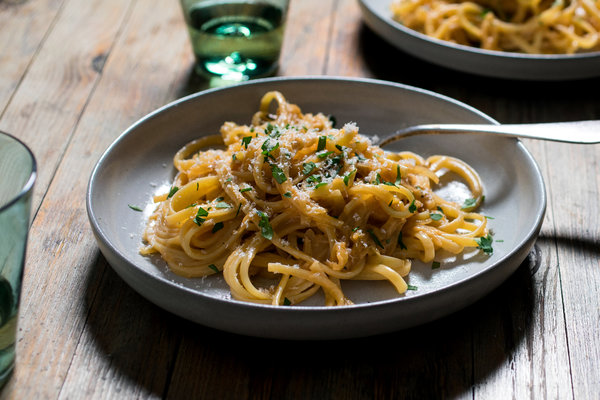
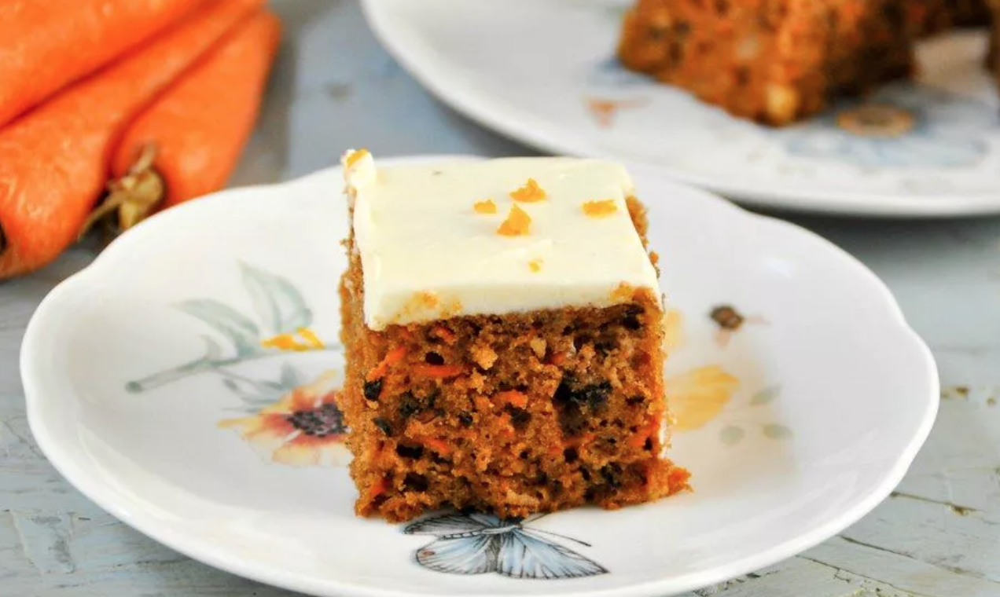
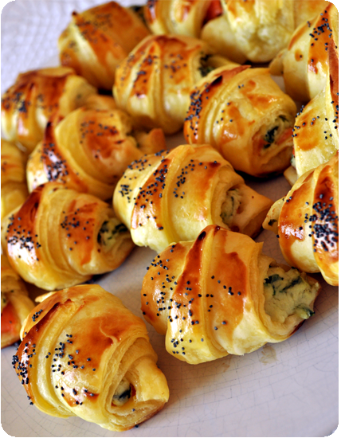
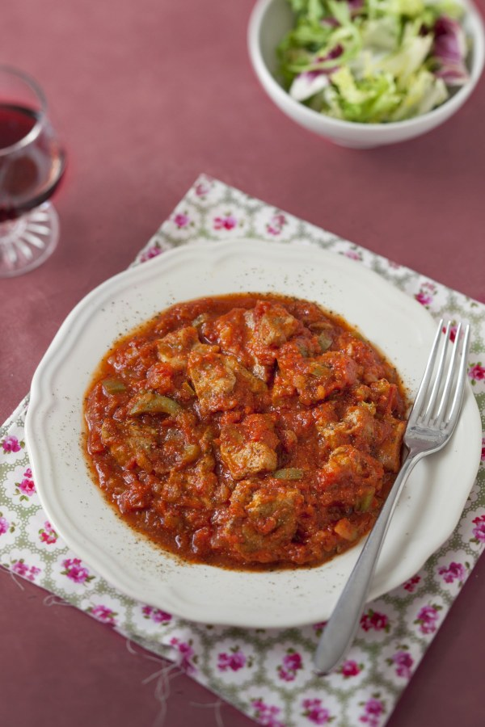
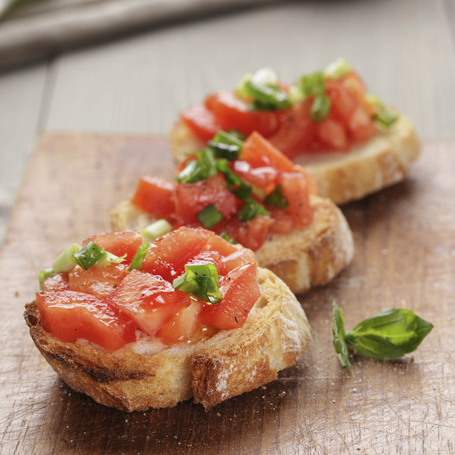
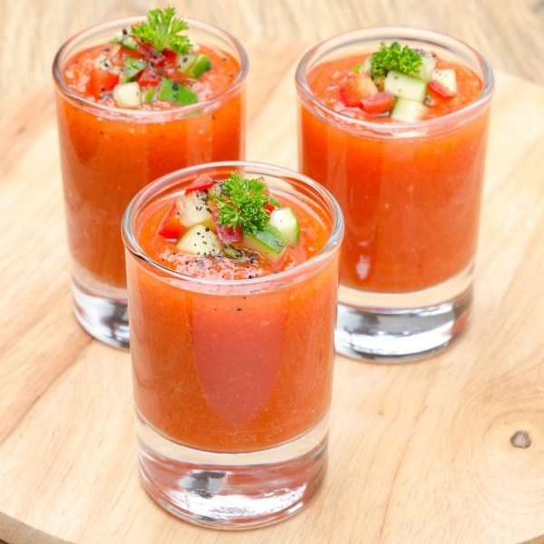

Découvrir la recette "Linguine aux oignons caramélisés" Linguine aux oignons caramélisés 3,0/5 sur 46 avis  Thème Rapide et facile Catégorie Plat
Découvrir la recette "Gâteau de carottes indien" Gâteau de carottes indien 3,2/5 sur 34 avis  Thème Inde Catégorie Dessert
Découvrir la recette "Croissants apéritifs" Croissants apéritifs 3,2/5 sur 33 avis  Thème Je débute Catégorie Apéro
Découvrir la recette "Magra con tomate" Magra con tomate 3,3/5 sur 18 avis  Thème Espagne Catégorie Plat
Découvrir la recette "Bruschetta aux tomates" Bruschetta aux tomates 3,3/5 sur 17 avis  Thème Italie Catégorie Apéro
Découvrir la recette "Gaspacho (Andalousie)" Gaspacho (Andalousie) 3,0/5 sur 16 avis  Thème Espagne Catégorie Entrée